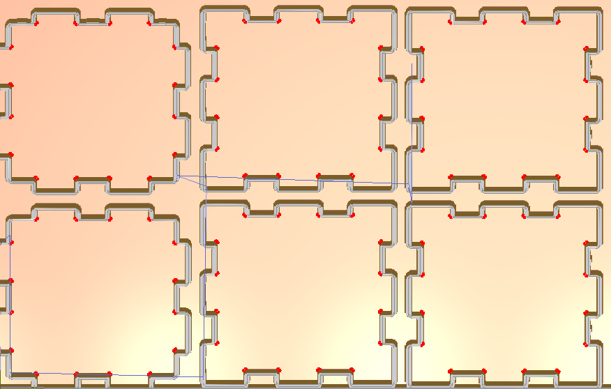
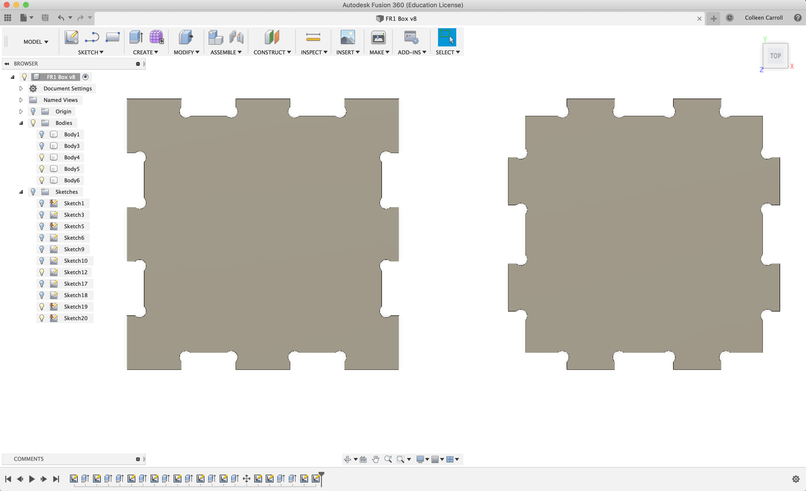
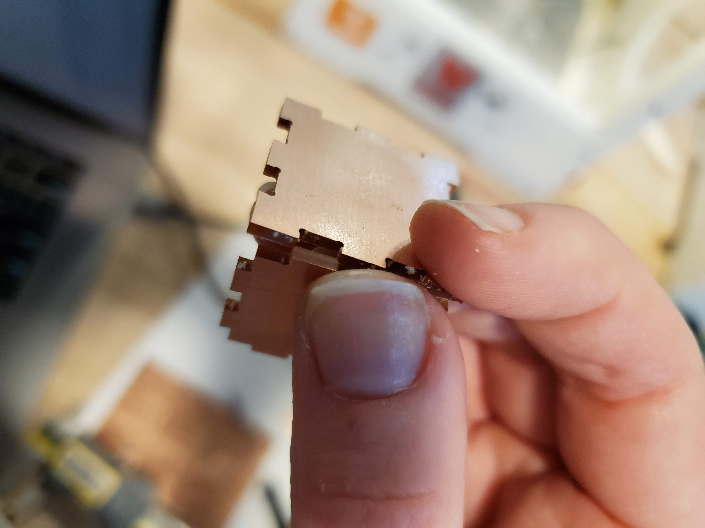
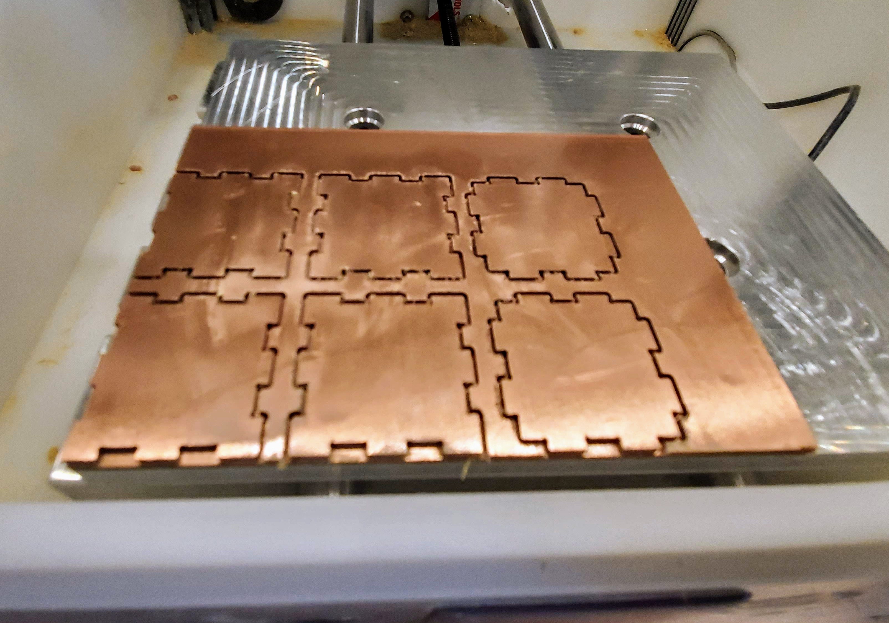
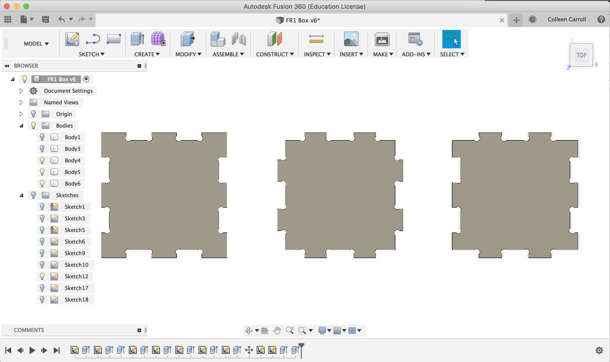
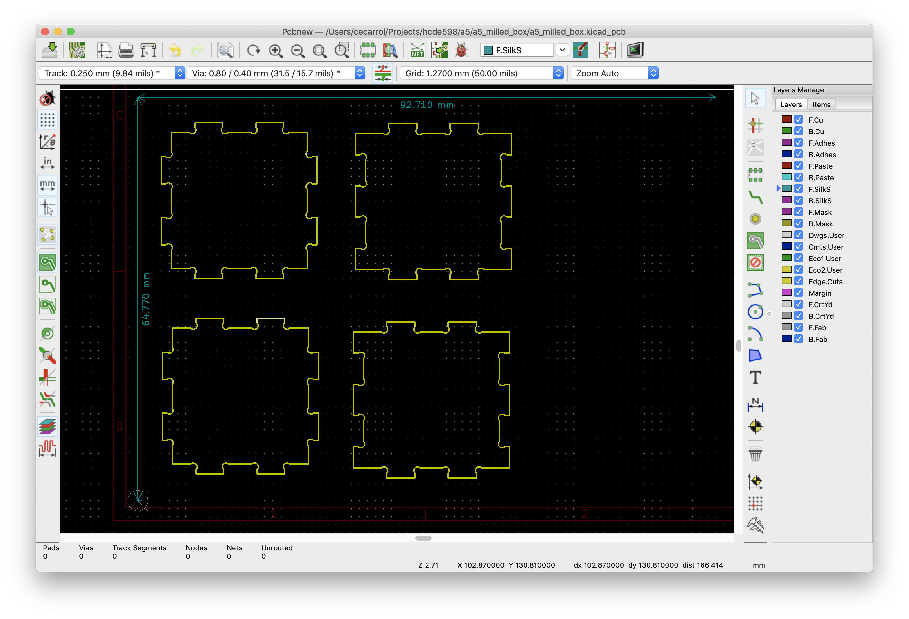
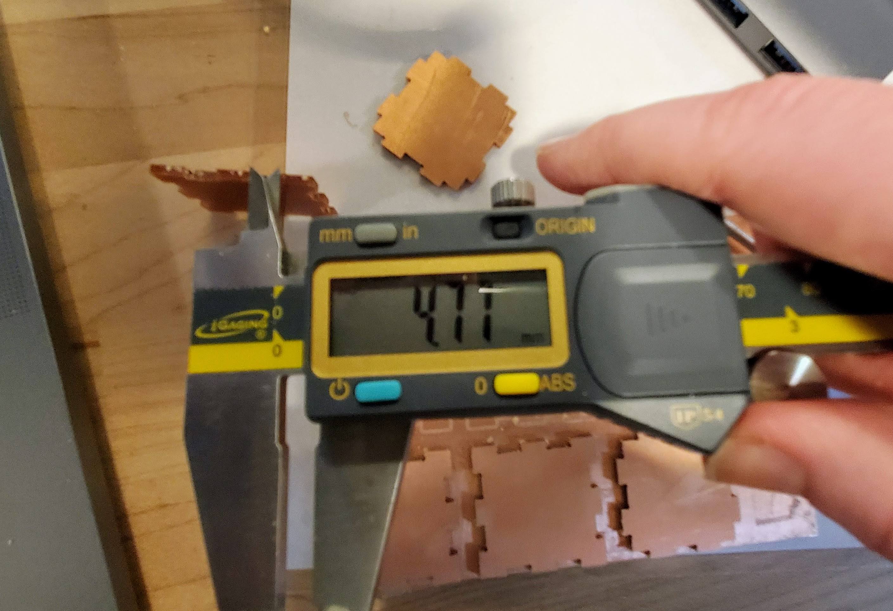
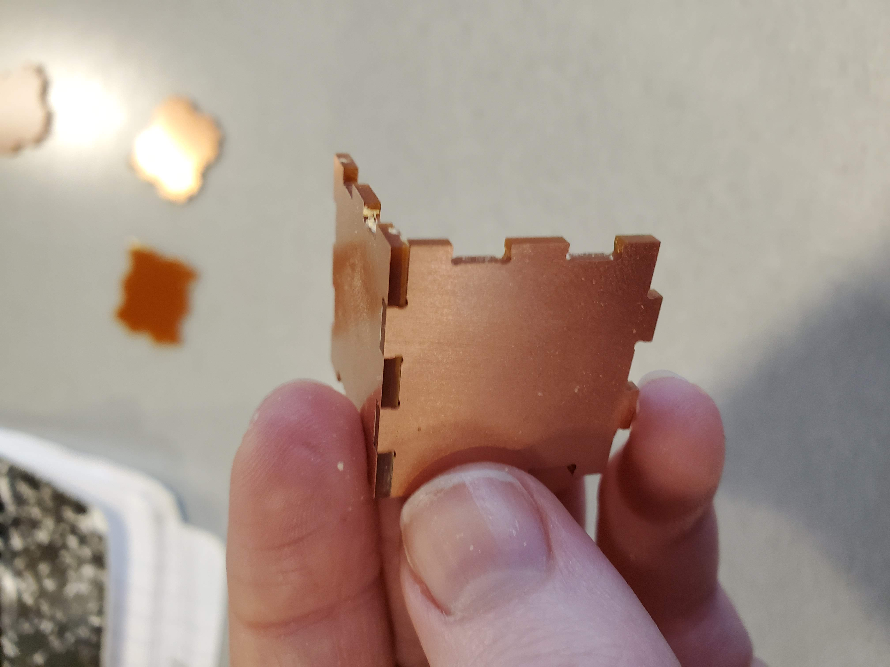
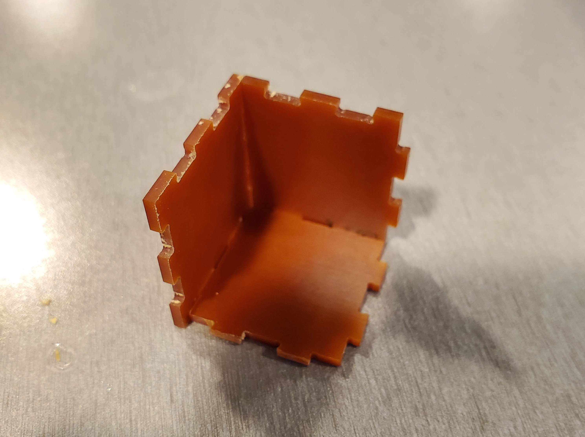
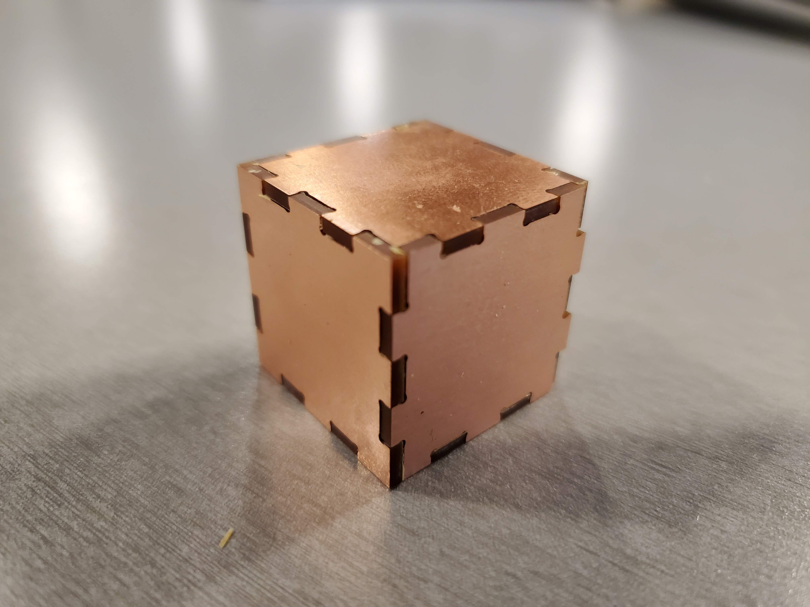

Colleen's Assignment 5!
I made a teensy tinesy copper cube with finger Joints!

Attempt 1
Dogbones
With sharp inner corners, and a round end mill, I needed to add dogbones to complete my project. I found this article really helpful for getting the geometry right.
The only issue was that the article says to make your circle the exact same diameter as your bit. Bantam Tools shows an error and wants you to use a bigger end mill if you do this, so I had to go back to the drawing board. I found that 1.5 * diameter of the end mill worked best.
Attempt 2
Zero Tolerance
I started by making the slots and tabs all the same size. Each side measures 25mm, with each tab and slot 5mm wide. Their depth is that of the copper plate.
This proved to be a mistake. The pieces didn't actually fit together. But that's what iteration is for!
Smooth Milling

I didn't have any issues with operating the mill this go around. The pieces came out as expected.
 Some All Assembly Required
Unfortunately, though the pieces came out as expected, there was design flaw. I only designed 2 unique sides to my cube, but they didn't all fit together in 3D. When I had two sides, I put together my assembly in Fusion before milling, but only tested with 2 sides ::smh::. Next time, I will assemble the WHOLE thing to make sure it all looks right.

Attempt 3
3 Sides to a Cube
I added a 3rd type of side, which was a combination of the other two shapes, so that it can fit in with the other two.
Since I left one side the same, I only needed to print two of each of the other two sides.
Ok, Some Tolerance
I measured roughly a .3mm tolerance needed for the slots, but went with .4 to be sure. I left one side the same but changed the slots on the other to 5.4mm and it's tabs to 4.6mm.
And this time it fit!
Final Product
The three sides worked together well.
And now I have a cute little shiny trinket box thing!
